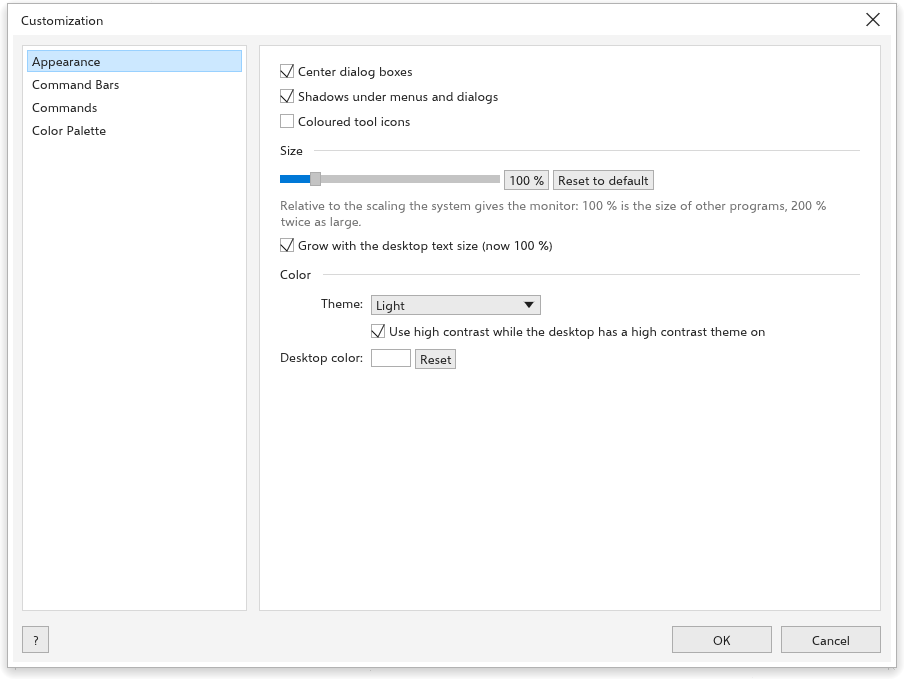
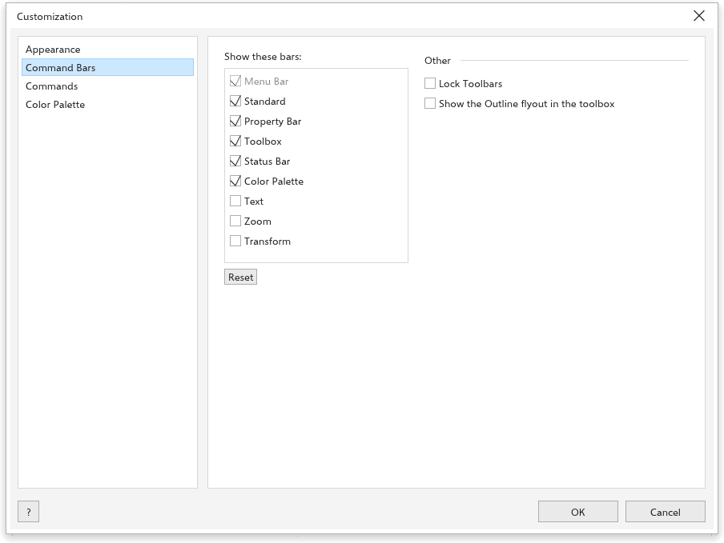

Možnosti přizpůsobení
Nástroje > Možnosti > Přizpůsobení nastavuje vzhled rozhraní, vaše vlastní klávesové zkratky, zobrazené lišty a chování barevné palety.
Vzhled

- Vycentrovat dialogová okna: dialogová okna se otevírají uprostřed okna; po vypnutí se otevírají tam, kde jste je naposledy nechali.
- Shadows under menus and dialogs (méně stínů pomůže pomalejší grafice).
- Coloured tool icons: každá skupina nástrojů dostane vlastní barvu.
- Velikost: jak velké jsou nabídky, lišty, ikony a panely vzhledem ke škálování, které systém monitoru dává (výchozí 100 %). Obnovit výchozí se vrátí na 100 %. Velikost rozhraní nikdy nemění velikost vaší kresby. Grow with the desktop text size (now {n} %) ji zvětšuje spolu s velikostí textu plochy.
- Barva: Motiv (Světlý, Středně světlý, Středně tmavý, Tmavý nebo Vysoký kontrast), Use high contrast while the desktop has a high contrast theme on a Barva plochy kolem stránky. Tlačítko na pravém konci stavového řádku přepíná mezi světlým a tmavým.
Příkazy

Stránka uvádí všechny příkazy nabídek s jejich zkratkami a klávesy nástrojů. Psaním do pole Najít seznam filtrujete.
Jak dát příkazu vlastní zkratku:
- Klikněte na tlačítko zkratky příkazu.
- Stiskněte klávesy, například Ctrl+Alt+K. Esc čekání ukončí.
Vaše zkratky mají přednost před vestavěnými: když si vezmete klávesu, kterou používá jiný příkaz, stránka řekne, který příkaz ji ztratil. Nabídky ukazují vaši zkratku. x vedle zkratky ji odebere a obnovení výchozích hodnot odebere všechny. Klávesy nástrojů jsou písmeno nebo Shift a písmeno. Viz Klávesové zkratky.
Příkazové lišty

Zobrazit tyto lišty Řádek nabídek, Standardní, Lišta vlastností, Sada nástrojů, Stavový řádek, Paleta barev a panely nástrojů Text, Zoom a Transformace. Obnovit vrátí lišty na místo. V části Ostatní: Zamknout panely nástrojů a Zobrazit nabídku Obrys v sadě nástrojů.
While these pages are open (or with Alt held), drag a button of the Standard or Zoom toolbar to move it, or off the bar to remove it. Drag a command from the Commands page onto one of these bars to add it. Reset on the Command Bars page brings the first buttons back.
Barevná paleta

- Automaticky aktualizovat paletu dokumentu a Zobrazit paletu dokumentu (obojí zapnuto).
- Vzorky barev: Zobrazit pole „Bez barvy“ (zapnuto) a co dělá Pravé tlačítko myši: Nastavit barvu obrysu (výchozí) nebo otevře Místní nabídka.
Viz Barevné palety.